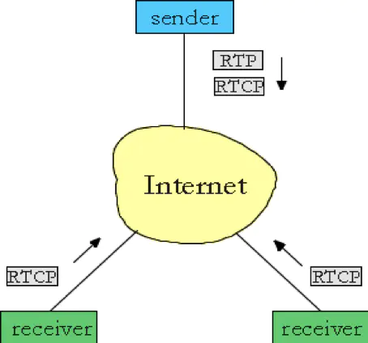
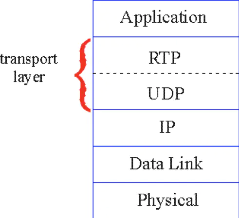
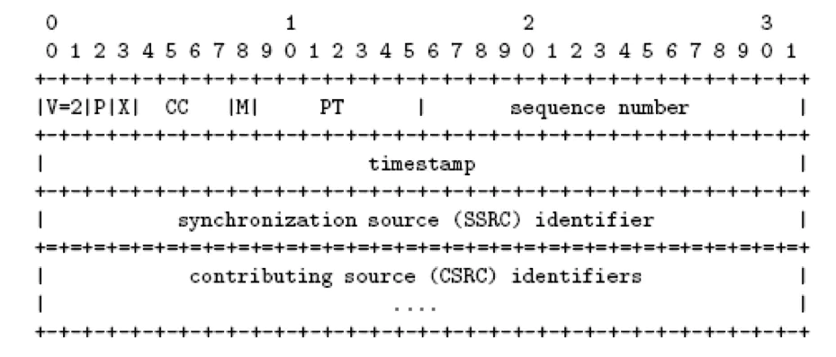
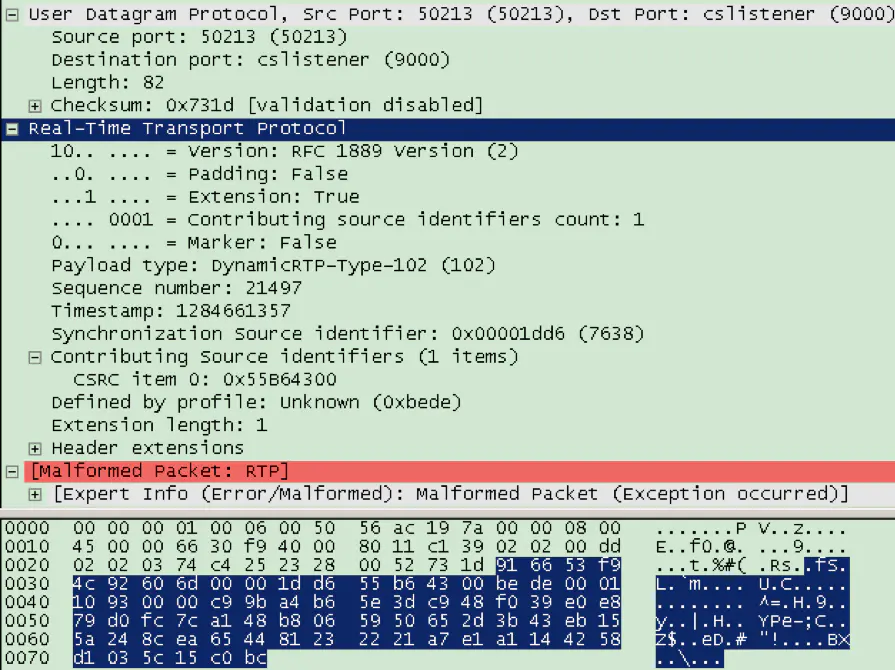
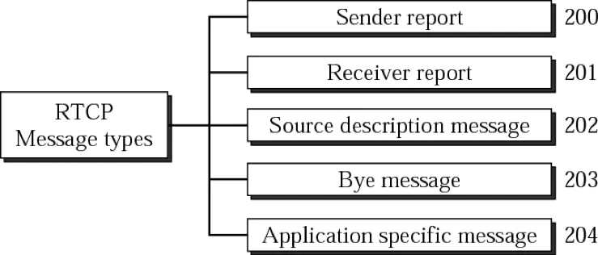
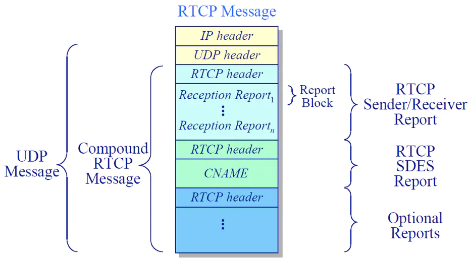
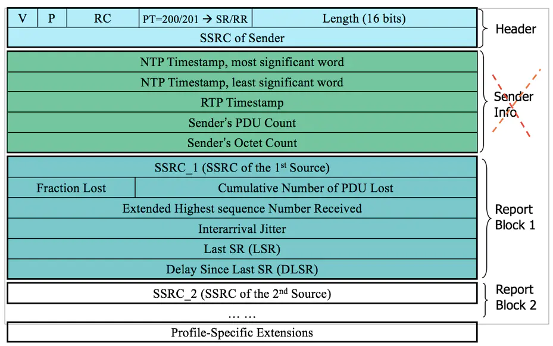
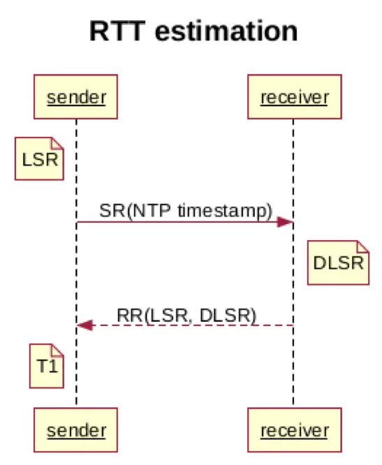
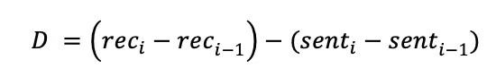
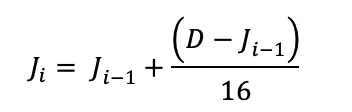

WebRTC RTP Usage
Abstract |
WebRTC RTP |
Authors |
Walter Fan |
Status |
v1.0 |
Updated |
2026-04-21 |
Overview
为满多媒体应用传输实时数据的需要, IETF RFC 3550 定义了实时传输协议RTP: A Transport Protocol for Real-Time Applications 即为实时应用程序所定义的传输协议, 它为交互式音频和视频聊天和会议应用提供端到端的传输服务.
RTP 解决的问题
让我们先想想实时传输需要解决哪些问题:
顺序 Sequence 多媒体数据包需要保序, 否则就会前言不搭后语, 让人不知所云, 通常我们可以用 sequenceNumber 来标识数据包的顺序, 通过它我们可以知道：
是否有数据包丢失
是否发生数据包乱序
是否需要进行无序解码
时间和缓存 Timstamp and buffer
我们还需要知道数据包的时间, 在回放语音和视频时需要按规定的时间线播放并操持音视频同步, 所以一个 timestamp 是必需的, 通过它我们可以用来 * 回放 * 计算网络抖动和延迟
载荷类型辨识 Payload type
我们需要知道数据包里承载的是什么内容, 媒体内容是音频还是视频, 是什么编码类型, 所以还需要一个 payload type
错误隐藏 Error concealment
错误总是难以避免的, 特别是在网络基于 UDP 的传输, 当发现网络丢包, 延迟, 乱序时我们要采取一些错误隐藏技术, 比如在相邻帧中添加冗余来掩盖丢包的错误, 或者自动插入一些重复数据包
服务质量反馈 QoS feedback
当语音或视频质量不佳时, 接收端需要告诉发送端做出调整, 或者调整发送速率或分辨率, 或者重新发送关键帧等, 这就需要一些度量报告, 比如 接收者报告RR(Receiver Report ) 和发送者报告SR(Sender Report)。
根据上述的问题和需求, RTP 协议由此制订出来, 它主要包括两块 1) 承载具有实时性质的数据的实时传输协议RTP。 2) 在进行的会话中监视服务质量并传输会话参与者信息的实时传输控制协议RTCP。

RTP
RTP 通常基于 UDP 传输, 因为多媒体数据可以忍受少量丢包, 却不能忍受数据包延时过大, 如图所示:

RTP协议栈
它的数据包格式如下:

RTP 数据包格式
包头详细解释如下:
V(version) 版本号, 2 个比特位, 当前版本为2
P(pad) 填充位, 1个比特位,当它为1时表示在数据包的末尾包含一个或多个不属于载荷的填充字节,填充的最后一个字节包含一个计数值, 表示所填充的字节数
X (eXtenstion) 扩展位, 1个比特位, 当它为1时表示存在一个扩展头
CC(Contribution Count), 贡献源的数量, 4个比特位, 定义其后的CSRC(Contributing Source) 的数量, 若无贡献源(这路多媒体数据没有合并自其他数据源), 则此项为零.
M(Marker) 标记位, 1个比特位, 不同的 RTP Profile 配置有不同定义,一个应用数据帧可能分割成若干个RTP 数据包,
这个字段用来在某个RTP数据包中标记应用数据帧是否开始或结束
PT(Payload Type) 载荷类型, 7个比特位, 标识RTP 载荷的格式, 表示一个RTP 数据包中所承载的内容到底是什么, 是音频还是视频, 是什么编码
Sequene Number 顺序号, 16个比特位, 顺序号的起始值是随机的, 发送者每发送一个RTP数据包, 顺序号就会加1, 接收者可以通过它来检查是否有丢包和乱序, 由应用程序来决定如何应对
Timestamp 时间戳, 32个比特位, 表示 RTP数据包中第一个字节的采样时间, 采样时间是单调和线性增长, 可以通过它来做同步和计算抖动,
它并不是我们通常所说的一天中的某个时间,而是从一个随机的时间戳开始以一个相对值不断增加的 采样个数, 比如最常见的音频编码G.711 PCMU的采样率是8000 Hz, 采样间隔为125微秒, 一个数据包的长度是20ms, 其实包含了20/0.125=160个采样, 一秒钟就有1000ms/20ms=50帧, 时间戳每个包就会增长160,每秒增长 160* 50=8000, 在多媒体回放时需要以它为参考。
SSRC(Synchronization Source) 同步源标识符, 32个比特位, 它在一个RTP 会话中唯一表示RTP的一个数据源, 比如麦克风, 摄像头这样的信号源, 也可能是一个混合器, 它作为一个中间设备将多个源混合在一起
CSRC(Contribution Source) 贡献源列表, 是n 个32比特位, n 是前面的 CC 字段指定的, 不超过2^4=16个, 它表示包含在这个数据包中的载荷的贡献源, 比如我们在音频会议中听到三个人在讨论问题, 这个数据包中包含了这三路语音混合在一起的音频数据,这个贡献源列表就有三个, 包含代表每个人的麦克风的同步源。
RTP 标准头之后就是载荷了, 如图所示：

RTP 数据包负载g
SDP 描述如下：
v=0
o=sample 496886 497562 IN IP4 127.0.0.1
s=sammple_rtp_session
c=IN IP4 127.0.0.1
t=0 0
m=audio 18276 RTP/AVP 102 13 98 99
a=sprop-source:1 csi=932617472;simul=1
a=sprop-simul:1 1 *
a=recv-source 1,2,3
a=rtpmap:102 iLBC/8000
a=rtpmap:13 CN/8000
a=rtpmap:98 CN/16000
a=rtpmap:99 CN/32000
a=extmap:1 urn:ietf:params:rtp-hdrext:ssrc-audio-level
a=extmap:2 urn:ietf:params:rtp-hdrext:toffset
a=ptime:20
由此可知数据包长度共为 118 字节, 其中：
数据链接层: 16 字节
IP 数据包头: 20 字节
UDP 数据包头: 8 字节, 其载荷为RTP数据包：
RTP 数据包: 74 字节
RTP 数据包头: 12 字节
RTP 扩展头: 4字节
RTP 载荷: 58字节
RTP 头的扩展
单字节扩展
首先是一个固定的魔术数字 0xBEDE (该标准写于5.25 日是 Bede 圣彼德的节日),
然后是所有扩展的总长度 length 的单位是 32-bits, 也就是 4 个字节
每个扩展有一个 4 bits 的 ID, 和一个 4 bits 的扩展长度 len (这个长度的单位是一个字节, 值是此扩展的总长度减 1, 即减去这个 ID + Len 的长度)
0 1 2 3
0 1 2 3 4 5 6 7 8 9 0 1 2 3 4 5 6 7 8 9 0 1 2 3 4 5 6 7 8 9 0 1
+-+-+-+-+-+-+-+-+-+-+-+-+-+-+-+-+-+-+-+-+-+-+-+-+-+-+-+-+-+-+-+-+
| 0xBE | 0xDE | length=3 |
+-+-+-+-+-+-+-+-+-+-+-+-+-+-+-+-+-+-+-+-+-+-+-+-+-+-+-+-+-+-+-+-+
| ID | L=0 | data | ID | L=1 | data...
+-+-+-+-+-+-+-+-+-+-+-+-+-+-+-+-+-+-+-+-+-+-+-+-+-+-+-+-+-+-+-+-+
...data | 0 (pad) | 0 (pad) | ID | L=3 |
+-+-+-+-+-+-+-+-+-+-+-+-+-+-+-+-+-+-+-+-+-+-+-+-+-+-+-+-+-+-+-+-+
| data |
+-+-+-+-+-+-+-+-+-+-+-+-+-+-+-+-+-+-+-+-+-+-+-+-+-+-+-+-+-+-+-+-+
双字节扩展
和单字节扩展不同之处在于
魔术数字变了，为 0x1000, 最后四位为 appbits, 可以不为 0, 具体含义由应用程序自己定义
0 1
0 1 2 3 4 5 6 7 8 9 0 1 2 3 4 5
+-+-+-+-+-+-+-+-+-+-+-+-+-+-+-+-+
| 0x100 |appbits|
+-+-+-+-+-+-+-+-+-+-+-+-+-+-+-+-+
扩展的 ID 是一个字节
扩展的 L 长度也是一个字节，它是指扩展数据的字节长度，不包括 ID 和长度字段。 值 0 表示没有后续数据。
例如
0 1 2 3
0 1 2 3 4 5 6 7 8 9 0 1 2 3 4 5 6 7 8 9 0 1 2 3 4 5 6 7 8 9 0 1
+-+-+-+-+-+-+-+-+-+-+-+-+-+-+-+-+-+-+-+-+-+-+-+-+-+-+-+-+-+-+-+-+
| 0x10 | 0x00 | length=3 |
+-+-+-+-+-+-+-+-+-+-+-+-+-+-+-+-+-+-+-+-+-+-+-+-+-+-+-+-+-+-+-+-+
| ID | L=0 | ID | L=1 |
+-+-+-+-+-+-+-+-+-+-+-+-+-+-+-+-+-+-+-+-+-+-+-+-+-+-+-+-+-+-+-+-+
| data | 0 (pad) | ID | L=4 |
+-+-+-+-+-+-+-+-+-+-+-+-+-+-+-+-+-+-+-+-+-+-+-+-+-+-+-+-+-+-+-+-+
| data |
+-+-+-+-+-+-+-+-+-+-+-+-+-+-+-+-+-+-+-+-+-+-+-+-+-+-+-+-+-+-+-+-+
RTCP
RTCP 实时传输控制协议, 它的主要目的就是基于度量来控制 RTP 的传输来改善实时传输的性能和质量, 它主要有5种类型的RTCP包： 1. RR接收者报告Receiver Report 2. SR发送者报告 Sender Report 3. SDES数据源描述报告 Source DEScription 4. BYE 告别报告 Goodbye 5. APP 应用程序自定义报告 Application-defined packet
RR, SR, SDES 可用来汇报在数据源和目的之间的多媒体传输信息, 在报告中包含一些统计信息, 比如 RTP包 发送的数量, RTP包丢失的数量, 数据包到达的抖动, 通过这些报告, 应用程序就可以修改发送速率, 也可做一些其他调整以及诊断。

RTCP 数据包类型
它也是基于 UDP 包进行传输：

RTCP 数据包栈
RTCP 的数据包格式如下：

RTCP packet
版本（V）：同RTP包头域。
填充（P）：同RTP包头域。
接收报告计数器（RC）：5比特，该SR包中的接收报告块的数目，可以为零。
包类型（PT）：8比特，SR包是200。
长度域（Length）：16比特，其中存放的是该SR包以32比特为单位的总长度减一。
同步源（SSRC）：SR包发送者的同步源标识符。与对应RTP包中的SSRC一样。
NTP Timestamp（Network time protocol）SR包发送时的绝对时间值。NTP的作用是同步不同的RTP媒体流。1900.1.1至今的秒数64bits: 32 bits 整数部分 + 32 bits 小数部分
RTP Timestamp：与NTP时间戳对应，与RTP数据包中的RTP时间戳具有相同的单位和随机初始值。
Sender’s packet count：从开始发送包到产生这个SR包这段时间里，发送者发送的RTP数据包的总数. SSRC改变时，这个域清零。
Sender`s octet count：从开始发送包到产生这个SR包这段时间里，发送者发送的净荷数据的总字节数（不包括头部和填充）。发送者改变其SSRC时，这个域要清零。
同步源n的SSRC标识符：该报告块中包含的是从该源接收到的包的统计信息。
丢失率（Fraction Lost）：表明从上一个SR或RR包发出以来从同步源n(SSRC_n)来的RTP数据包的丢失率。
Cumulative number of packets lost 24bits: 累计的包丢失数目：从开始接收到SSRC_n的包到发送SR,从SSRC_n传过来的RTP数据包的丢失总数。
Extended highest sequence number received: 32 bits 收到的扩展最大序列号：从SSRC_n收到的RTP数据包中最大的序列号，EHSN = ROC*2^16, ROC 指 Sequence Number 重置回滚的次数(因为SN只有16位,很容易就会超过 2^16 的最大值, 只好再从零开始,这个重新回到零的次数即 ROC - ROll Count)
Interarrival jitter: 32 bits 接收抖动,RTP数据包接受时间的统计方差估计
Last SR (LSR): 32 bits 取最近从SSRC_n收到的SR包中的NTP时间戳的中间32比特。如果目前还没收到SR包，则该域清零。
Delay since last SR (DLSR) : 32 bits 上次SR以来的延时, 即上次从SSRC_n收到SR包到发送本报告的延时。 RR(n) – SR(n) 单位: 1/65536 s
1. RTP 协议的度量要点
通过RTP 数据包头和 RTCP 报告, 我们能够度量 RTP 传输的三个主要度量指标 往返延迟RTT, 丢包Packet Loss 和 抖动Jitter
1) 往返延时RTT
往返延时RTT 很好理解, 也就是数据包在发送和接收双方走一个来回所花费的时间. 当延时在150ms以下时，通话双方几乎不能感觉到延时的存在，而当延时在400ms以下时，也是用户能够接受的，当延时进一步增大后，达到800ms以上，正常的通话就无法进行. 接受者报告RR可用来估算在发送者和接收者之间的往返延迟 RTT, 在接收者报告中包含: * LSR(Last timestamp Sener Report received) 上一次发送者报告接收的时间 * DLSR(Delay since last sender report received) 上一次发送者报告接收的延迟

往返时延RTT 计算公式如下：
RTT = T1 – LSR - DLSR
看一个例子
[10 Nov 1995 11:33:25.125 UTC] [10 Nov 1995 11:33:36.5 UTC]
n SR(n) A=b710:8000 (46864.500 s)
---------------------------------------------------------------->
v ^
ntp_sec =0xb44db705 v ^ dlsr=0x0005:4000 ( 5.250s)
ntp_frac=0x20000000 v ^ lsr =0xb705:2000 (46853.125s)
(3024992005.125 s) v ^
r v ^ RR(n)
---------------------------------------------------------------->
|<-DLSR->|
(5.250 s)
A 0xb710:8000 (46864.500 s)
DLSR -0x0005:4000 ( 5.250 s)
LSR -0xb705:2000 (46853.125 s)
-------------------------------
delay 0x0006:2000 ( 6.125 s)
A 是 RR 接收的时间， NTP timstamp 的32位表示为 0xb710:8000， 即 46864.500 s
DLSR 上 RR 中所记录的上次收到 SR 到这次发送 RR 所经历的时间，单位是 1/65536 秒， 算出为 0x0005:4000 即 5.250 s
LSR 是上次 SR 发送的时间，ntp_sec =0xb44db705， ntp_frac=0x20000000， 取中间32bit 为 0xb705:2000 即 46853.125 s
结果为 A - DLSR -LSR = 46864.500 - 5.250 - 46853.125 = 6.125 s
1) 抖动Jitter
在理想情况下, RTP数据包到达的间隔是固定的, 比如IP电话中最常用的编码g.711, 每个包的荷载长度为20毫秒, 每秒应该有50个数据包, 但是实际上网络并不总能稳定传输的, 阻塞,拥塞是常有的事, Jitter 抖动即指数据到达间隔的变化,如图所示:
抖动的计算要稍微麻烦一点, 为避免偶发的波动造成抖动的计算偏差, 它被定义为 RTP 数据包到达间隔时间的统计方差。
首先计算数据包接收与发送时间间隔的差别，也就是两个 packet 传输延时的差异，此时所计算的 jitter 时只用到相邻两个 packet 的 delta， 反映的是某一时刻网络延迟的变化情况

而如下的到达间隔抖动 J 定义为差值的平均偏差（平滑后的绝对值）。之所以要除以 16 是为了减少大的随机变化的影响。 所以到达间隔时间的变化需要重复几次才能显著地影响抖动的估计

抖动是不可避免的, 在合理区间的抖动是可以接受, 通常采用抖动缓冲 Jitter Buffer 来解决抖动的问题, 数据包接收之后并不马上解码, 而是先放在缓冲区中. 假设缓冲区深度是60ms, 那么解码总是等到缓冲区中的若干数据包总长度达到60ms时才取出解码, 在 60ms 之内的抖动自然没有任何影响.
RFC3550 中有具体算法
int transit = arrival - r->ts;
int d = transit - s->transit;
s->transit = transit;
if (d < 0) d = -d;
s->jitter += (1./16.) * ((double)d - s->jitter);
1) 丢包 Packet loss
如果一个UDP 包在网络上由于拥塞或超时而丢失了，或者一个TCP数据包的延时过大, 超过了最大的抖动缓冲深度, 应用程序也就不会再等待, 直接丢弃, 这时候，我们要么采用丢包补偿策略进行处理, 要么发消息让发送方重传.
Packet loss丢包率的公式很简单
丢失的包数 = 期望的包数 - 收到的包数
期望的包数 = 最大sequence number – 初始的 sequence number
最大sequence number = sequence number循环次数 * + 最后收到的 sequence number
根据上述度量指标, 多媒体应用程序可以即时调整 Jitter Buffer 长度，编码参数, 分辨率, 或者发送速率等, 为用户提供流畅的体验.
4. 实例
这里写一个小程序来打印 RTP 包头，使用 ffmpeg 来推送一个 RTP 流到 8880 端口，然后写一个简单的 UDP 服务器从这个端口上接收RTP 数据并打印包头。
主要代码很短
#include <arpa/inet.h>
#include <netinet/in.h>
#include <stdio.h>
#include <sys/types.h>
#include <sys/socket.h>
#include <unistd.h>
#include <stdlib.h>
#include <string.h>
#include <iostream>
#include <string>
#include "rtputil.h"
#define BUFLEN 5120
#define PORT 8880
using namespace std;
void exitWithMsg(const char *str)
{
perror(str);
exit(1);
}
int main(void)
{
struct sockaddr_in my_addr, cli_addr;
int sockfd;
socklen_t slen=sizeof(cli_addr);
uint8_t buf[BUFLEN];
if ((sockfd = socket(AF_INET, SOCK_DGRAM, IPPROTO_UDP))==-1)
exitWithMsg("socket error");
else
printf("Server : Socket() successful\n");
bzero(&my_addr, sizeof(my_addr));
my_addr.sin_family = AF_INET;
my_addr.sin_port = htons(PORT);
my_addr.sin_addr.s_addr = htonl(INADDR_ANY);
if (::bind(sockfd, (struct sockaddr* ) &my_addr, sizeof(my_addr))==-1)
exitWithMsg("bind error");
else
printf("Server : bind() successful\n");
int pktCount = 0;
while(1)
{
int pktSize = recvfrom(sockfd, buf, BUFLEN, 0, (struct sockaddr*)&cli_addr, &slen);
if(pktSize == -1) {
exitWithMsg("recvfrom()");
}
printf("The %d packet received %d from %s:%d\n", ++pktCount, pktSize, inet_ntoa(cli_addr.sin_addr), ntohs(cli_addr.sin_port));
if(pktSize > 12) {
cout << dump_rtp_packet(buf, pktSize) <<endl;
}
}
close(sockfd);
return 0;
}
其中用到的 rtputil 代码请参见 rtputil.h 和 rtputil.cpp, 主要是借用了 libsrtp 中定义的结构体和工具方法
测试步骤
mkdir bld
cd bld
cmake ..
make
启动 udp server
./udpserver
找一个mpegts 文件，打开另外一个终端窗口，用 ffmpeg 来推送RTP 流到 8880 端口 (例子文件 https://github.com/walterfan/webrtc_primer/blob/main/material/sintel.ts)
ffmpeg -re -i ./sintel.ts -f rtp_mpegts udp://127.0.0.1:8880
执行结果如下
ffmpeg -re -i ../../material/sintel.ts -f rtp_mpegts udp://127.0.0.1:8880
ffmpeg version 3.3.2 Copyright (c) 2000-2017 the FFmpeg developers
built with Apple LLVM version 8.1.0 (clang-802.0.42)
configuration: --prefix=/usr/local/Cellar/ffmpeg/3.3.2 --enable-shared --enable-pthreads --enable-gpl --enable-version3 --enable-hardcoded-tables --enable-avresample --cc=clang --host-cflags= --host-ldflags= --enable-libmp3lame --enable-libx264 --enable-libxvid --enable-opencl --disable-lzma --enable-vda
libavutil 55. 58.100 / 55. 58.100
libavcodec 57. 89.100 / 57. 89.100
libavformat 57. 71.100 / 57. 71.100
libavdevice 57. 6.100 / 57. 6.100
libavfilter 6. 82.100 / 6. 82.100
libavresample 3. 5. 0 / 3. 5. 0
libswscale 4. 6.100 / 4. 6.100
libswresample 2. 7.100 / 2. 7.100
libpostproc 54. 5.100 / 54. 5.100
Input #0, mpegts, from '../../material/sintel.ts':
Duration: 00:00:26.13, start: 1.446667, bitrate: 1306 kb/s
Program 1
Metadata:
service_name : Service01
service_provider: FFmpeg
Stream #0:0[0x100]: Video: h264 (High) ([27][0][0][0] / 0x001B), yuv420p(progressive), 848x480, 25 fps, 25 tbr, 90k tbn, 50 tbc
Stream #0:1[0x101]: Audio: aac (LC) ([15][0][0][0] / 0x000F), 48000 Hz, stereo, fltp, 151 kb/s
Stream mapping:
Stream #0:0 -> #0:0 (h264 (native) -> mpeg4 (native))
Stream #0:1 -> #0:1 (aac (native) -> aac (native))
Press [q] to stop, [?] for help
Output #0, rtp_mpegts, to 'udp://127.0.0.1:8880':
Metadata:
encoder : Lavf57.71.100
Stream #0:0: Video: mpeg4, yuv420p, 848x480, q=2-31, 200 kb/s, 25 fps, 90k tbn, 25 tbc
Metadata:
encoder : Lavc57.89.100 mpeg4
Side data:
cpb: bitrate max/min/avg: 0/0/200000 buffer size: 0 vbv_delay: -1
Stream #0:1: Audio: aac (LC), 48000 Hz, stereo, fltp, 128 kb/s
Metadata:
encoder : Lavc57.89.100 aac
frame= 653 fps= 25 q=31.0 Lsize= 2385kB time=00:00:26.19 bitrate= 745.9kbits/s dup=1 drop=0 speed=0.992x
video:1675kB audio:413kB subtitle:0kB other streams:0kB global headers:0kB muxing overhead: 14.238406%
[aac @ 0x7fc976810400] Qavg: 562.469
另外一个窗口显示总共收到了1845 个 RTP 包
//...
The 1845 packet received 1328 from 127.0.0.1:54824
[rtp] dump_rtp_packet: ssrc=2444272939(0x91B0A52B), seq=3564(0x0DEC), pt=33(0x21), ts=1930119409(0x730B48F1), hdr_ext_len=12, pkt_len=1328, hdr_ext: 80210dec730b48f191b0a52b, tailer: ef3bc778eec0fbc1cf04ee01b0d704eae01709b805c26e3bc31addc8b0c06386db47abbc3196ed9663c50c65f36863bbacb7adbc31d3dc83c31f6dcc31bcff86, tailer_len=64